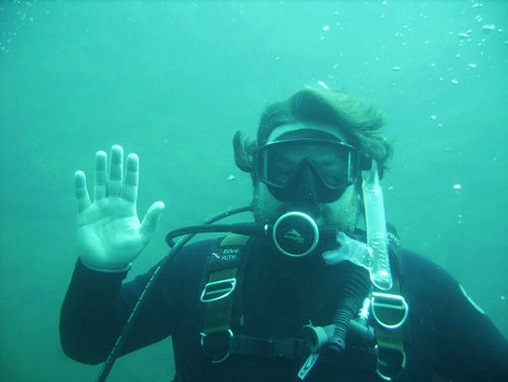

Scuba Diving
I started diving several years ago. The picture below is from my final
training dive. I worked through a handful of diving certifications
through SDI including rescue diver before I started grad school. All my
diving has been at local rock quarries, but I am looking forward to
actually getting out into the ocean one of these days with all the sea
life.

Diving is one of my many hobbies that took a back seat to grad school so
I am hoping to get back out and do some more diving this summer!